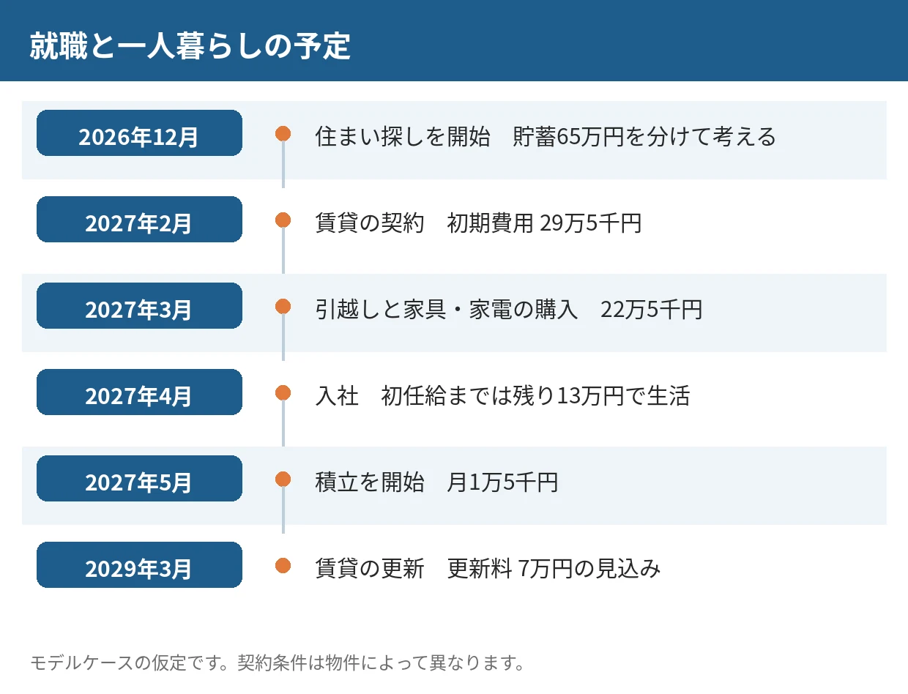

就職して一人暮らしを始めるお金 初期費用と初任給までの生活費を整理する
来春に就職して一人暮らしを始めるときの初期費用は、契約・引越し・家具家電で合計52万円。貯蓄65万円から初任給までの生活費13万円を残す分け方を、収支のリストと予定表で整理します。
この記事の要点
- 初期費用は、契約29万5千円、引越し4万5千円、家具・家電18万円で、合計52万円です。貯蓄65万円の中に収まります
- 初任給が出るまでの生活費として13万円を残しておくことが、この計画の要です
- 次の一歩は、物件の申込みの前に、契約にかかる費用の合計を不動産会社に確認すること。そして入社後は、月1万5千円の積立を給与の支給日に合わせて自動で移す設定にすることです
制度・金額の確認日 2026年11月20日
ご相談の形で書いたモデルケースです。ご家庭と家計の数字は仮定で、賃貸借契約の費用はこのご家庭の契約条件をもとにしています
今回のご相談
「来年の春に就職して、実家を出て一人暮らしを始めます。貯金は65万円ほどありますが、契約や引越しにいくらかかるのか、初任給が出るまでの生活費が足りるのかが心配です」
就職が決まっても、働き始める前にまとまったお金が出ていきます。このご家庭の場合、問題は貯金の額そのものではなく、初期費用の内訳と、初任給が出るまでの期間の長さが読めていないことでした。
ご相談のご家庭
- 高橋陽太さん（23歳）。大学4年生で、来年3月に卒業し、4月から食品メーカーに勤務する予定です。勤務先は東京都内で、実家のある群馬県からは通えないため、一人暮らしを始めます
- 在学中のアルバイトは、飲食店で週3回ほど。月6万円ほどの収入があり、少しずつ貯めて、現在の預貯金は65万円です
- 住まいは、勤務先への通勤を考えて東京都内の賃貸を検討中です。家賃は7万円前後を目安に探しています
- 趣味はランニングと動画の視聴で、在学中は月1万円ほど使っています。就職後も続けたいそうです
このご家庭の心配ごと
- 賃貸の契約にかかるお金の総額。敷金や礼金のほかに何が要るのかが分からないそうです
- 初任給が出るまでの約1か月の生活費。給与の支給日は勤務先の規定で決まるため、入社してすぐには入ってきません
- 2年目から始まる住民税の差し引き。手取りが減る時期を先に知っておきたいそうです
現在の収支（ご相談に関係する範囲）
収入（月）
- アルバイトの収入 6万円
- 合計 6万円
支出（月）
- 実家への食費の負担 2万円
- 通信費 5千円
- 交通費や日用品など 1万5千円
- 合計 4万円
残りと資産
- 月の残り 2万円（就職準備の貯蓄に回しています）
- 預貯金 65万円
就職後は、初任給の手取りが月18万5千円ほどになる見込みです。ただし、これは勤務先から案内された初任給をもとにした見込みで、実際の手取りは社会保険料の差し引きなどで変わります。
これから必要になるお金と時期
- 2026年12月 住まい探しを開始。貯蓄65万円を、初期費用と生活費に分けて考える
- 2027年2月 賃貸の契約 初期費用29万5千円
- 2027年3月 引越しと家具・家電の購入 22万5千円
- 2027年4月 入社。初任給の支給までは、手元に残した13万円で生活する
- 2027年5月 積立を開始 月1万5千円
- 2029年3月 賃貸の更新 更新料7万円の見込み

初期費用の内訳は、次のとおりです。家賃7万円の物件で、敷金1か月分、礼金1か月分、仲介手数料1か月分、前家賃1か月分、火災保険料1万5千円という契約条件の場合です。
- 敷金 7万円
- 礼金 7万円
- 仲介手数料 7万円
- 前家賃 7万円
- 火災保険料 1万5千円
- 契約にかかる費用の合計 29万5千円
引越しの費用4万5千円と、家具・家電の購入費18万円を合わせると、働き始める前に出ていくお金は合計52万円になります。契約条件は物件ごとに異なりますので、申込みの前に、合計でいくら要るのかを不動産会社に確認することが大切です。
ご提案1 貯蓄を「初期費用」と「初任給までの生活費」に分ける
65万円の貯蓄のうち、初期費用に52万円を使うと、手元には13万円が残ります。4月の生活費は、家賃7万円が月末の支払いになる契約なら、食費と日用品に使えるのは残りの範囲です。食費3万5千円、水道光熱・通信費1万5千円、日用品など1万円で合計6万円ほどを見ておくと、13万円の中に収まります。
大切なのは、初期費用の支払いが終わった時点で「残りはいくらか」をはっきりさせることです。残りの金額が分かれば、家具・家電の買い方も決めやすくなります。たとえば、冷蔵庫や洗濯機など毎日使うものは新品でそろえ、机や収納は後から買い足す形にすると、3月の支出を抑えられます。
ご提案2 毎月の支出は、初任給の手取りの中で組み立てる
就職後の毎月の支出の目安は、次のとおりです。
支出（月）の目安
- 家賃 7万円
- 水道光熱・通信 1万5千円
- 食費 3万5千円
- 交通費 8千円
- 日用品や交際費など 3万2千円
- 合計 16万円
手取りの見込み18万5千円から支出16万円を差し引くと、残りは2万5千円です。このうち1万5千円を積立に回し、1万円をゆとりとして残す形をご提案します。
積立の使い道は、2年後の賃貸の更新です。更新料が家賃1か月分（7万円）の契約なら、月1万5千円の積立を24か月続けると36万円になり、更新料と火災保険料の更新分を払っても、帰省や旅行に回せる分が残ります。
ご提案3 2年目の住民税に、先に備える
住民税は、前年の所得をもとに計算され、翌年に納める仕組みです。就職1年目は前年の所得が少ないため差し引きはほぼありませんが、2年目の6月ごろからは、給与から住民税が差し引かれるようになるのが一般的です。手取りは1年目より減ります。
対策は難しくありません。1年目のうちから、積立とは別に「2年目以降は手取りが少し減る」ことを前提に支出を組んでおくことです。固定費を手取りいっぱいに広げてしまうと、2年目に家計が急に苦しくなります。
給与の受け取り口座は、勤務先から指定がある場合と、自由に選べる場合があります。選べる場合は、給与の振込と家賃の引き落としを同じ口座にまとめると、残高の管理がしやすくなります。
このご家庭への結論
- 初期費用は、契約29万5千円、引越し4万5千円、家具・家電18万円で、合計52万円です。貯蓄65万円の中に収まります
- 初任給が出るまでの生活費として13万円を残しておくことが、この計画の要です
- 次の一歩は、物件の申込みの前に、契約にかかる費用の合計を不動産会社に確認すること。そして入社後は、月1万5千円の積立を給与の支給日に合わせて自動で移す設定にすることです
この記事のご家庭と家計はモデルケースの仮定です。賃貸借契約の費用は、物件と契約条件によって異なります。初任給の手取りは見込みの金額で、実際の金額は勤務先の給与規定と社会保険料によって変わります。